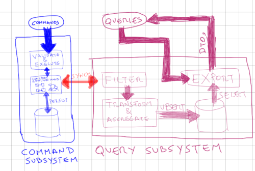

ARCHITECTURES
Introspection
Edu & Elena
BIG BALL OF MUD
Layered Architecture
Layered Architecture
YAYS
- Clear dependence structure benefits evolution
- Segregation of concerns avoid coupling views / business / persistence
- Lower layers are independent from the upper layers
- Upper layers can evolve independently from the lower layers as long as the interface semantics is unchanged
- Strict layering: limits propagation of change
- Reuse
NAYS
- Not universally applicable
- Performance (mostly for strict layering and many layers)
- Coupling with data
SOA
Service-oriented architecture is a style of architecture based on service. A service is a well-defined and self-contained functionality. In this architecture, different services communicate with each other to perform some activity. These services are loosely-coupled i.e., a service need not know the technical details of another service that it is interacting with. Basically, SOA consists of a service consumer and a service provider. The former requests for some service while the latter executes the service and returns the result for the request. While communicating, the service provider and the consumer both adhere to a pre-defined protocol.
SOA
SOA VS LAYERED
YAYS
- Reusability
- Maintainabilitiy
- Better Scalability and availability
- Platform Independent - different technologies can be used!
NAYS
- Complex Service Management
- Performance (latency)
- Not recomended for Real Time Applications
Dependency Inversion Principle
Onion Architecture

Hexagonal
Similitudes
The most stable things are not dependent on less stable things that change more frequently.
The layer more important and more stable is domain.
- Based on DDD principles
- Independent of Frameworks.
- Testable.
The business rules can be tested without the UI, Database, Web Server, or any other external element. - Independent of Database.
- Independent of any external agency.
Business rules simply don’t know anything at all about the outside world.
Differences
- Onion focuses on Application services to connect with outside and structures de domain on three different layers
Subdomain segregation
Layered Languages
CQRS
Domain events
- Signal that something has happened
- Closely aligned to the Domain Model
- Info should be minimal - avoid fat events
- Are handled by a messaging system
- They are in past tense:
CustomerBilled
ReviewCreated...
+info: Verraes
Event Source
Event Source
Event Source
Interesting Example: Dice game

Event Source
Advantages:
- Complete Rebuild
- Temporal Query
- Event Replay
Clasic examples: CVS/Wiki.
Event Source
Disadvantages:
- Queries ∧ reports not allowed from event stream -> create optimised read models from events
- Complete Rebuild can be slow
- Exponential growth of data events -> Snapshotting
- Buggy commands inconsistency -> Versioning